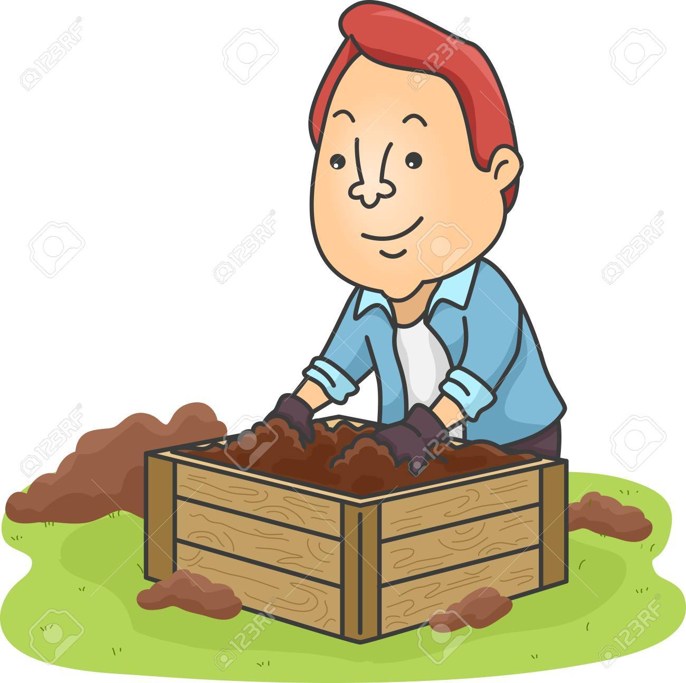
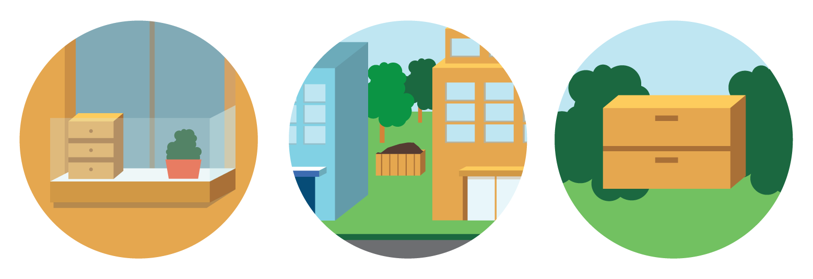
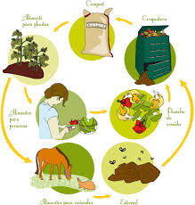

La composta es un tipo de tierra hecha a base de desechos orgánicos que se obtiene a partir de un proceso llamado compostaje. Realizar tu propia composta
puede llegar a ser tardado y a veces hasta tedioso, pero definitivamente, el resultado es de lo mejor que vas a encontrar en cuanto a calidad de compostas se refiere.
Hacer tu propia composta tiene muchos beneficios.

Antes de realizar la composta, se tienen que tener en cuenta algunas cosas como:
La composta se puede realizar con materiales y residuos orgánicos que se encuentran en casa, aunque hay que tener cuidado pues desechos como huesos, carne, grasa,
productos lácteos, carbón o cualquier cosa tratada con pesticidas podría arruinar la mezcla.
Los productos que se recomiendan para hacer la composta son los "verdes" (frutas, vegetales, cáscara de huevo y restos de café), pues tienen alto contenido de nitrógeno,
por otro lado, los elementos "cafés" (pedazos de madera, excremento de vaca o caballo, cartón o papel y hojas muertas), le aportarán a la composta un alto contenido de
carbón.
La compostera es el lugar en donde se hará la composta, se puede comprar hecha o se puede hacer en casa, el tamaño se tiene que adecuar al espacio que tengas disponible en casa, debe de tener rendijas que permitan la ventilación y también tiene que ser de fácil manejo y apertura.
Con todo esto, podremos realizar una composta realmente buena. Si aún así piensas que es demasiado trabajo también puedes optar por comprar la composta en locales de jardinería.
